根据 Unicode 5.2.0 标准文档中的描述，空格字符（Space Characters）有多种，如最常见的 U+0020 空格（SPACE），经常被使用的不断行空格 U+00A0（NO-BREAKING SPACE，即 ）等等。在表意文字中，U+3000（IDEOGRAPHIC SPACE）即表意空格则由于其宽度与其他表意文字等宽而被广泛使用。
关于 U+3000 IDEOGRAPHIC SPACE 及 全角（Full-width）字符 的更多资料，请参考 Unicode 5.2.0 标准 Chapter 6 Writing Systems and Punctuation、CJK Symbols and Punctuation 及 UAX #11 EAST ASIAN WIDTH 中的内容。
根据 CSS2.1 规范中的描述，当一个行内框的宽度超出了行框的宽度，这个行内框会被分割为若干个框分布到若干个行框上。如果行内框无法被分割（如包含单独字符，或者当前语言指定的断词规则不允许中断，再或者被设置了值为 'nowrap' 或 'pre' 的 'white-space' 特性），此时的行内框会溢出行框。
关于 行内格式化 的更多资料，请参考 CSS2.1 规范 9.4.2 Inline formatting context 中的内容。
IE 和 Firefox 在宽度不够时不会对连续的全角空格进行折行处理，此时因超宽而可能溢出行框的连续的全角空格在 IE6 IE7 IE8(Q) 中将被容器剪裁，在 IE8(S) Firefox 中将溢出容器。
这个现象可能造成连续的全角空格在 IE 和 Firefox 中不会自动打破行框折行至新的行上，从而导致文本布局差异。
| IE6 IE7 IE8(Q) | |
|---|---|
| IE8(S) | |
| Firefox |
字符“”，即表意空格（Ideographic Space），也可以叫全角空格（Full-width Space），对应的 HTML 实体字符为“　”。在相同的等宽中文字体下，全角空格的宽度与普通汉字的宽度相等。
关于“空格”的更多信息，请参考 http://zh.wikipedia.org/zh-cn/空格。
分析以下代码：full-width_space.html
<body> <div style="width:100px; background:gray; font:16px/2 Arial;"> <span
style="background:blue;"></span></div> <br /> <div style="width:100px; background:gray;
font:16px/2 Arial;"> <span
style="background:blue;"></span></div>
</body>
测试代码分为上下两组，每组均为一个宽度为 100px 的 DIV 元素内包含一个蓝色背景的 SPAN 元素，SPAN 元素的内容文本为 10 个全角空格（U+3000）。两组的区别为第一组中 SPAN 元素的结束标签与其父元素 DIV 的结束标签之间存在空白符，而第二组中则为紧密相连。
这段代码在各浏览器中效果为：
| IE6 IE7 IE8(Q) | IE8(S) | Firefox | Chrome Safari Opera |
|---|---|---|---|
| 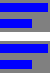 |
从截图中可见，Chrome Safari Opera 中全角空格被视同与普通的中文汉字一样对待。
而 IE6 IE7 IE8(Q)1 中全角空格没有折行，并且被包含块将可能溢出行框的部分裁切。
在 Firefox 中全角空格不会折行，溢出行框及包含块。
在 IE8(S)2 中情况比较特殊，若 SPAN 元素与父元素的结束标签之间存在空白符，则表现得与 Firefox 中类似，若两个结束标签紧密相连则整个 SPAN 元素丢失，没有被正确渲染出来。
注 1：若为第二组的 SPAN 元素设置 border、padding 则 SPAN 元素不再被剪裁。
注 2：若为第二组的 SPAN 元素设置 border、padding 则 SPAN 元素不再消失。
下面为 SPAN 元素之前增加一个其他的行内级元素：fw_space_2.html
<body style="font:12px/2 Consolas;"> <div style="background:gray; width:120px; padding:10px
0;"> <span style="display:inline-block; width:120px; background:bisque;">123</span>
<span style="background:skyblue;"> </span> </div> <br/> <div
style="background:gray; width:120px; padding:10px 0;"> <span style="display:inline-block;
width:120px; background:bisque;">123</span> <span
style="background:violet;">一二三四五</span> </div> <br /> <div
style="background:gray; width:120px; padding:10px 0;"> <span style="display:inline-block;
width:80px; background:bisque;">123</span> <span style="background:skyblue;">
</span> </div> <br/> <div style="background:gray; width:120px; padding:10px 0;">
<span style="display:inline-block; width:80px; background:bisque;">123</span> <span
style="background:violet;">一二三四五</span> </div> <br /> <div
style="background:gray; width:120px; padding:10px 0;"> <span style="display:inline-block;
width:40px; background:bisque;">123</span> <span style="background:skyblue;">
</span> </div> <br/> <div style="background:gray; width:120px; padding:10px 0;">
<span style="display:inline-block; width:40px; background:bisque;">123</span> <span
style="background:violet;">一二三四五</span> </div> </body>
这段代码在各浏览器中效果为：
| IE6 IE7 IE8(Q) | IE8(S) | Firefox | Chrome Safari Opera |
|---|---|---|---|
| 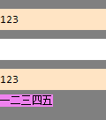 | 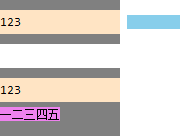 | 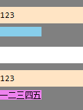 | |
| 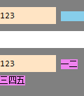 | 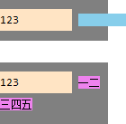 | 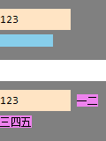 | 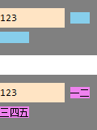 |
| 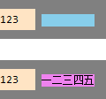 |
这组截图中得到的结论与之前的相符，
下面通过一组动画更清晰的观察此现象：fw_ani.html
| IE6 IE7 IE8(Q) | IE8(S) | Firefox | Chrome Safari Opera |
|---|---|---|---|
| 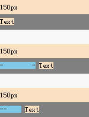 | 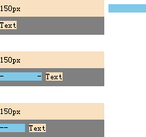 | 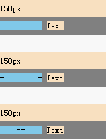 |
使用 代替全角空格（U+3000）。
| 操作系统版本: | Windows 7 Ultimate build 7600 |
|---|---|
| 浏览器版本: |
IE6
IE7 IE8 Firefox 3.6.8 Chrome 6.0.472.14 dev Safari 5.0.1 Opera 10.60 |
| 测试页面: |
full-width_space.html
fw_space_2.html fw_ani.html |
| 本文更新时间: | 2010-08-04 |
full-width IDEOGRAPHIC space 空格 全角 表意 字符 character